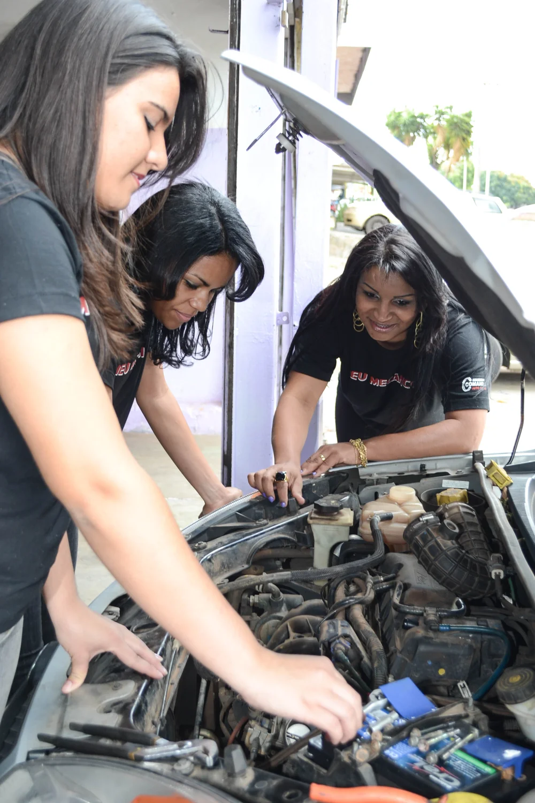
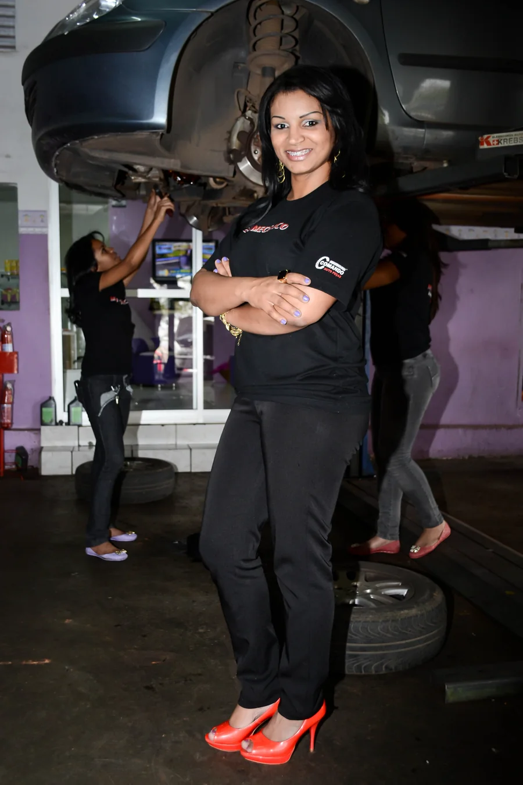
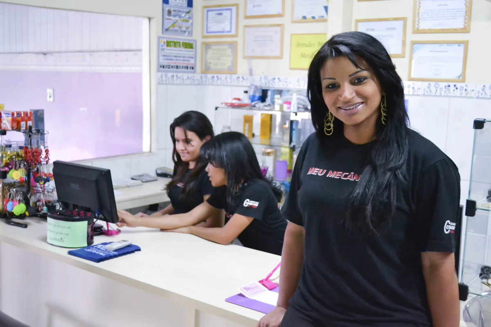

Espaço para perguntar.
A conversa sobre o seu carro começa com o que você quer entender.

CEILÂNDIA, DF / DESDE 2010
A oficina mecânica da mulher
Seu carro em boas mãos.
Você no centro da conversa.
Um carro tem peças.
Uma relação tem confiança.
Desde 2010, em Ceilândia, a Meu Mecânico trabalha com manutenção geral de veículos leves e um propósito claro: colocar respeito, ética e transparência na relação com quem dirige.
Uma oficina voltada às mulheres. Um espaço para perguntar, entender e participar do cuidado com o seu carro.
Conheça a história que nos trouxe até aquiA conversa sobre o seu carro começa com o que você quer entender.
Informação e transparência fazem parte de uma boa relação com a oficina.
Atendimento que reconhece quem está ao volante e valoriza a sua voz.
Manutenção geral de veículos leves.
O primeiro passo é entender o seu momento.

O manual do veículo e o histórico de manutenção são bons pontos de partida para conversar sobre os próximos cuidados.
Um ruído diferente, uma luz no painel ou uma mudança ao dirigir são informações úteis para começar a conversa com a oficina.
Conversar sobre a manutenção com antecedência ajuda a organizar os cuidados do veículo antes da viagem.
Um guia para a conversa. Os cuidados indicados dependem da avaliação e das características de cada veículo.

Como o carro faz parte do seu dia? O que você percebeu? A sua experiência ajuda a dar contexto à conversa.
Conhecer o veículo e avaliar suas necessidades é o caminho para falar sobre manutenção com mais clareza.
Perguntar sobre o que será feito, os valores e as condições do atendimento faz parte da sua decisão.
Guardar o histórico e conhecer as orientações para o seu veículo ajudam a organizar os próximos cuidados.
A história da Meu Mecânico
também é sobre ocupar espaços.
Agda Oliver está à frente de uma trajetória que começou em 2010, em Ceilândia. Uma oficina com atendimento voltado às mulheres e uma proposta que ganhou reconhecimento para além do Distrito Federal.
Em 2013, Agda recebeu o Prêmio Sebrae Mulher de Negócio em nível nacional. Um capítulo importante de uma história construída com trabalho e propósito.
Conheça a nossa história
Início das atividades em reparação automotiva.
Prêmio Sebrae Mulher de Negócio para Agda Oliver.
Ética, transparência e cuidado nas relações.
Reportagens e registros de momentos que fazem parte da trajetória da Meu Mecânico.
Ver reportagens e entrevistasRegistros históricos publicados no acervo da marca. Datas referem-se às publicações originais.
Um olhar para o acervo da oficina.
Histórias que se encontram por aqui.
Fotografias reais do acervo da marca. Retratam diferentes momentos de sua trajetória.
NO CENTRO DE TUDO
O seu carro importa.
Você, mais ainda.
MEU MECÂNICO / A OFICINA MECÂNICA DA MULHER
Conte como o carro faz parte da sua rotina.
A equipe está pronta para conversar.
Fale com a equipe para combinar a avaliação do veículo e consultar a disponibilidade de atendimento.